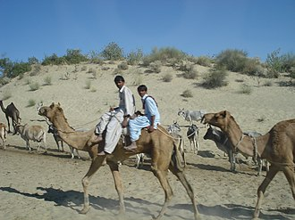
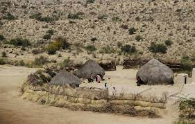
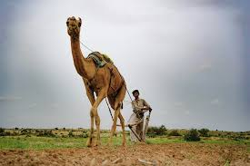

The Thar Desert spans an area of 175,000 square kilometers and covers large areas of Pakistan and India. It is the largest desert of Pakistan and the only subtropical desert of Asia. It is the 16th largest desert on the planet and the third largest in Asia. It has also spread into India. The Thar Desert, also known as the Great Indian Desert, is a large, arid region in the northwestern part of the Indian subcontinent that forms a natural boundary between India and Pakistan. It is the world's 16th largest desert, and the world's 9th largest subtropical desert. 85% of the Thar Desert is in India, and the remaining 15% is in Pakistan. In India, it covers 320,000 km2 (120,000 sq mi), of which 90% is in Rajasthan and extends into Gujarat, Punjab, and Haryana. In Pakistan, it spreads over Punjab and Sindh starting from Tharparkar District in the east. This desert consists of a very dry part, the Marusthali region, in the west, and a semi-desert region in the east with fewer sand dunes and slightly more precipitation.
 ;  